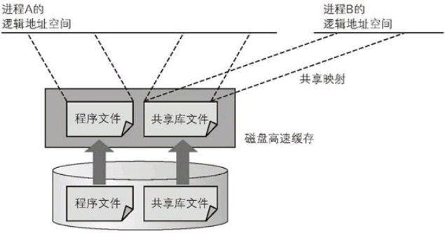
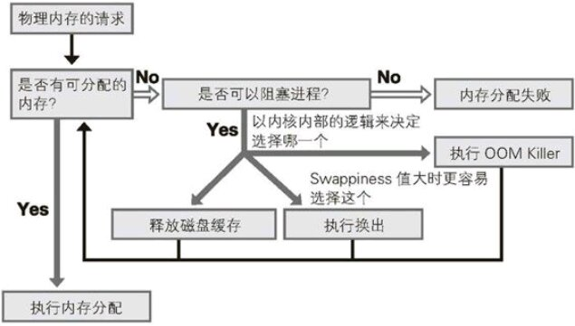

linux内存的分配和释放
了解内存分配机制(共享映射与请求分页)
通过 pmap 命令，可以获取用户进程逻辑地址空间中映射的内存信息：
pmap -x $pid
其中 -x 表示获取详细信息。
下面是一个例子：
pmap -x $(pidof emacs) |head -20
2492: emacs --daemon 住址 Kbytes RSS Dirty Mode Mapping 0000000000400000 2332 2108 0 r-x-- emacs-25.3 0000000000846000 36 36 12 r---- emacs-25.3 000000000084f000 14116 12996 9712 rw--- emacs-25.3 0000000002d92000 188880 188516 188516 rw--- [ anon ] 00007f36ae634000 27808 232 0 r---- FZSongS(SIP)_2010603.TTF 00007f36b015c000 5060 316 0 r---- wqy-microhei.ttc 00007f36b064d000 5060 564 0 r---- wqy-microhei.ttc 00007f36b0b3e000 11968 4816 0 r---- FZFSK.TTF 00007f36b16ee000 740 292 0 r---- DejaVuSans.ttf 00007f36b17a7000 328 224 0 r---- DejaVuSansMono-Bold.ttf 00007f36b17f9000 17608 992 0 r---- FZSongS_20100603.TTF 00007f36b292b000 112 92 0 r---- Cantarell-Regular.otf 00007f36b2947000 248 148 0 r---- DejaVuSansMono-Oblique.ttf 00007f36b2985000 512 24 24 rw-s- [ shmid=0x26800e ] 00007f36b2a05000 8 8 0 r-x-- libpixbufloader-svg.so 00007f36b2a07000 2044 0 0 ----- libpixbufloader-svg.so 00007f36b2c06000 4 4 4 r---- libpixbufloader-svg.so 00007f36b2c07000 4 4 4 rw--- libpixbufloader-svg.so
其中，“Address(地址)”指的进程的逻辑地址空间。
"Kbytes"列表示的是对应逻辑地址的容量，以Kb为单位
“RSS”列表示的是实际使用的物理内存容量，由于分页机制的存在，这个值一般要比"Kbytes"的值要少。
"Mapping"列为逻辑内存的映射方式，其中"[annon]"表示通过malloc函数来分配的堆空间（匿名内存），"[stack]"为进程的栈空间，这两种映射都是将物理内存映射到进程的逻辑内存上去。 而"emacs-25.3","libpixbufloader-svg.so"等文件名则表示它们执行的是文件映射，他们对应的是磁盘上的文件。当这些文件被读入高速缓存后，相应的内存空间被映射成进程的逻辑内存。
当出现多个程序共同使用相同的文件映射(共享库)时，它们可以共享磁盘高速缓存中的同一空间，从而节省物理内存的使用量，这种技术就是"共享映射"技术。

除了共享库外，进程的fork也使用了共享映射技术。 当父进程fork子进程时，Linux内核并不对内存中的内容进行实际上的复制，而是将映射到父进程逻辑地址空间内的那部分内容原封不动地共享映射到子进程的逻辑地址空间内。 但为了防止父进程和子进程的内存操作相互影响，Linux内核在进行共享映射时，相应的内存区域会暂时设置为写保护。 当某一方进程试图操作内存时，会引发只读异常。内核检测到这个异常后，会复制操作的这个内存页，从而使两个进程都可进行独立写入。 这种在写入时复制的机制叫做“写时复制(copy-on-write)”
另一方面，进程将可执行文件或共享库文件内容读入内存并映射到进程逻辑地址空间上时，并不会读入全部的文件内容，而是先标记"该文件的内容已经被映射到逻辑地址空间内". 当进程访问逻辑地址空间时，由于不存在对应的物理内存，会引发换页错误的异常。内容检测到该异常后会将所需部分以内存页为单位读入内存中。 这种只读入所需内容的机制，叫做请求分页。
了解内存释放机制
当其他进程需要新的物理内存时，就涉及到如何将尚有数据残余的物理内存释放或换出来的问题了。

当需要新物理内存时，会优先释放Inactive(file)和Active(file)中记录的内存页，只需要将脏数据写入文件中再释放内存页即可。
而Inactive(anon)和Active(anon)内存页则需要将内容交换到物理磁盘上的swap中后再释放。 具体来说，Linux会在进程页表上做一个标记，标记出换出内存所对应的逻辑地址。 当进程访问该逻辑地址时，会产生相应物理内存不存在的异常，Linux内核检测到这个异常后，会再次将数据从swap中加载入空闲内存，并重新配置页表信息。
Linux内核使用两种机制来加快换出处理速度：
一种是预读。
当某一个内存页需要换入时，Linux内核会将其后的几个内存页一起换入。因为进程连续访问多个内存页的可能性很大。预读的页数为内核参数
vm.page-cluster决定为2^vm.page-cluster.另一种是交换缓存。
即在换入某个内存页后，物理磁盘上交换空间中仍然保留原数据，这种状态的内存会记录在“交换缓存”的列表上。这样当需要再次换出记录在“交换缓存”上的内存页的数据时，就无需再次换入了。
每个进程的内存使用情况可以通过查看 /proc/进程ID/status 来查看
cat /proc/$(pidof emacs)/status
Name: emacs Umask: 0022 State: S (sleeping) Tgid: 6769 Ngid: 0 Pid: 6769 PPid: 1 TracerPid: 0 Uid: 1000 1000 1000 1000 Gid: 1000 1000 1000 1000 FDSize: 64 Groups: 986 998 1000 NStgid: 6769 NSpid: 6769 NSpgid: 6769 NSsid: 6769 VmPeak: 567040 kB VmSize: 567040 kB VmLck: 0 kB VmPin: 0 kB VmHWM: 241176 kB VmRSS: 241176 kB RssAnon: 204544 kB RssFile: 36604 kB RssShmem: 28 kB VmData: 231712 kB VmStk: 1596 kB VmExe: 2332 kB VmLib: 47832 kB VmPTE: 1008 kB VmSwap: 0 kB HugetlbPages: 0 kB CoreDumping: 0 Threads: 4 SigQ: 1/15456 SigPnd: 0000000000000000 ShdPnd: 0000000000000000 SigBlk: 0000000000000000 SigIgn: 0000000004381000 SigCgt: 00000001db816eff CapInh: 0000000000000000 CapPrm: 0000000000000000 CapEff: 0000000000000000 CapBnd: 0000003fffffffff CapAmb: 0000000000000000 NoNewPrivs: 0 Seccomp: 0 Cpus_allowed: 3 Cpus_allowed_list: 0-1 Mems_allowed: 1 Mems_allowed_list: 0 voluntary_ctxt_switches: 12951 nonvoluntary_ctxt_switches: 21641
其中比较有用的项有：
- VmData
- data段的大小
- VmExe
- text段的大小
- VmHWM
- 当前物理内存使用量的最大值
- WmLck
- 用mlock锁定的内存大小
- VmLib
- 共享库的使用量
- VmPTE
- 页面表的大小
- VmPeak
- 当前物理内存的最大值
- VmRSS
- 物理内存的实际使用量
- VmSize
- 逻辑地址的大小
- VmStk
- 堆栈的大小
- VmSwap
- 交换空间的使用量